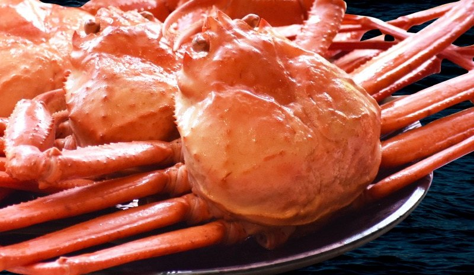
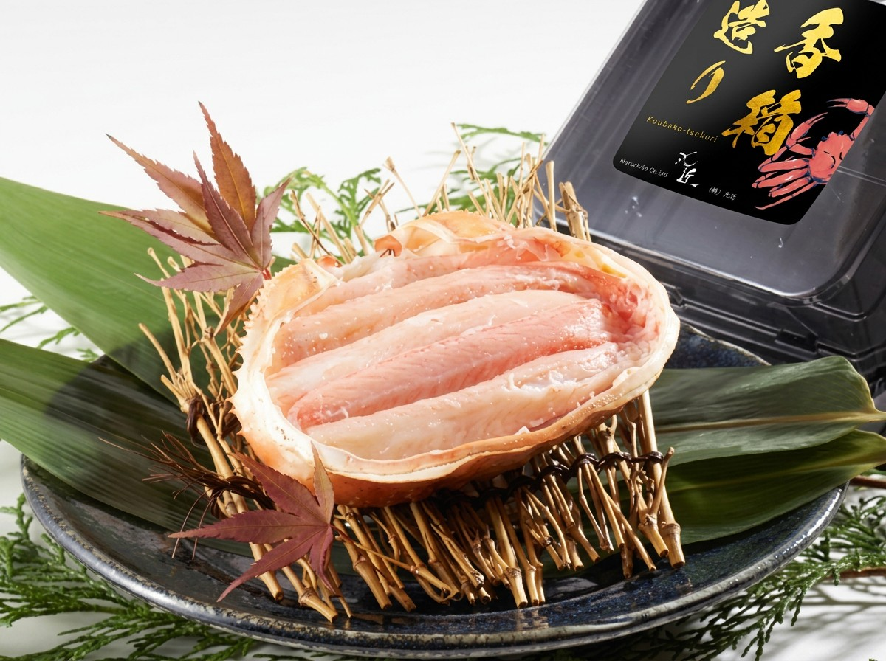
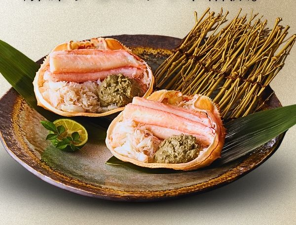
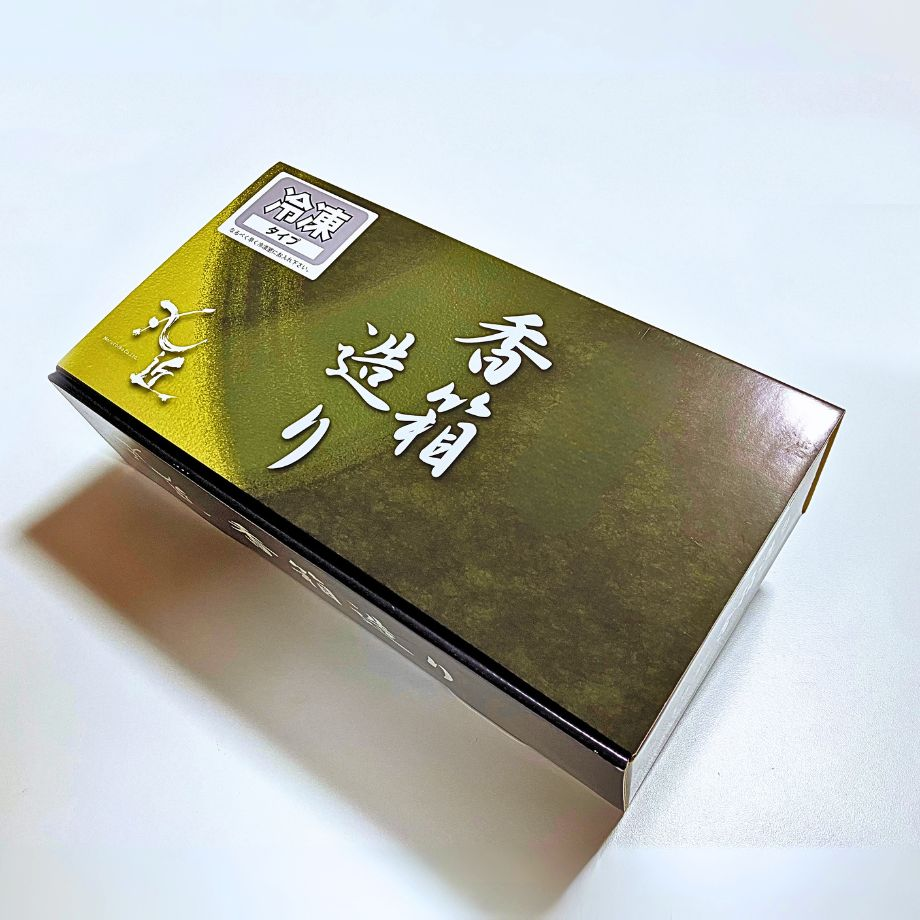

水揚げから15時間。
その日のうちに出荷。
国内の主要漁港で水揚げされたベニズワイガニを、競りから最短15時間で出荷。日帰りの小型船漁だからこそ届く鮮度で、雑味のない澄んだ甘みを守ります。

 株式会社丸近｜【公式サイト】
株式会社丸近｜【公式サイト】
国内漁港水揚げ 国産ベニズワイガニ
殻をむく手間なし、そのままお箸で楽しめる。
職人が一つひとつ手作業で甲羅へ盛り付けた、
解凍するだけで料亭の一皿になる贅沢です。

国内の主要漁港で水揚げされたベニズワイガニを、競りから最短15時間で出荷。日帰りの小型船漁だからこそ届く鮮度で、雑味のない澄んだ甘みを守ります。

大量生産のための機械詰めはあえてせず、ほぐした身と蟹味噌を職人が一つひとつ手作業で甲羅へ。盛り付けたての美しさと美味しさを、そのまま急速冷凍で閉じ込めます。

身も濃厚な蟹味噌も、丸々1杯分を甲羅に凝縮。約160g×4個入りで、ご家族のお食事やおもてなし、お歳暮の贈り物にも見栄えする一品です。

・・・ 一度食べたら、もう戻れない。
「解凍するだけ」で、
料亭の一皿に。
盛り付けたての美味しさを、そのまま急速冷凍。
冷蔵庫でゆっくり解凍するだけで、本格の香箱造りがご家庭に届きます。
器に盛るだけで完成。加熱も味付けも不要、甘みそのままをお楽しみください。
お好みで甲羅ごと直火にかければ、香ばしさが立ちのぼる、また違ったご馳走に。
身をほぐして温かいご飯へ。蟹味噌を溶かせば、贅沢な一杯があっという間に。
甲羅ごと食卓へ出すだけで様になる、日本酒にもよく合う特別な一品です。
★★★★★
「ボリュームがあって、解凍してすぐ食べられる手軽さがとても良い。甲羅の底の方にカニ味噌があるので、カニ本来の味が楽しめる。本当に美味しいのでリピートしています。」
★★★★★
「カニの身をとらず、そのまま食べられるので、お年寄りや子どもさんにも大変喜ばれる一品料理でした。盛り付けの丁寧さも良かったです。」
★★★★★
「今回で3回目になります。剥かなくていい、蒸さなくていい、ゴミ捨てに気を使わなくていい。あっ、食べに行かなくていい！大満足です。」
・・・ 次の入荷は、海まかせ。
「数量限定、
50セットのみ。」
職人の手作業仕立てのため、大量生産はできません。
在庫がなくなり次第、販売終了となります。

| 商品名 | 国産ベニズワイガニ 甲羅盛り 香箱造り |
|---|---|
| 内容量 | 約160g × 4個入り |
| 原材料 | ベニズワイガニ（国産）、食塩 |
| 産地 | 国内の主要漁港 水揚げ |
| 加工者 | 株式会社 丸近（兵庫県美方郡香美町香住区） |
| 賞味期限 | 発送日より30日間 |
| 保存方法 | −18℃以下で冷凍保存 |
| お召し上がり方 | 冷蔵庫で一日かけてゆっくり解凍し、そのままお召し上がりください。甲羅ごと軽く炙っても美味しくいただけます。 |
| アレルギー | かに（同一工場でえび・小麦・いかを含む製品を製造） |
| ご注意 | 12月15日〜1月20日は着日のご指定を承れません。数量限定50セット、なくなり次第終了です。 |
本場の味を、甲羅ごと。
※ 数量限定50セット／在庫がなくなり次第、販売終了となります。